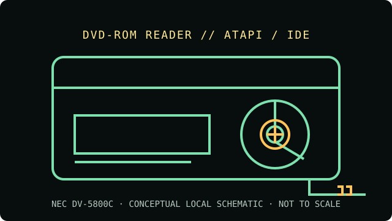

[ INDIVIDUAL COMPONENT // OPTICAL DRIVES ]
NEC DV-5800C
16× internal ATAPI DVD-ROM reader. This model is documented as a reader, not a recorder. Match the complete model and revision label to source documentation before using the recorded-media compatibility notes.

IDENTIFICATION: NEC DV-5800C · confirm complete model suffix, hardware revision and firmware before assigning capabilities.
Verified specifications
| Catalog subcategory | DVD-ROM readers |
|---|---|
| Exact product identifier | NEC DV-5800C |
| Drive class | 16× internal ATAPI DVD-ROM reader |
| DVD read rate | DVD-ROM up to 16× |
| CD read rate | CD-ROM up to 48× |
| Supported formats | DVD-ROM, DVD-Video and DVD-R/RW; CD-ROM, CD-ROM XA, CD-DA, CD-R and CD-RW (read only). Use the exact DV-5800C manual revision when checking recordable-media support. |
| Interface and mechanism | Internal 5.25-inch half-height E-IDE / ATAPI tray-loading drive with PIO 4 / Ultra DMA/33 support, 40-pin data connector and Molex power. |
| Host compatibility | Needs a parallel ATA controller and correct drive-select jumper/cable configuration. Use a compatible 5.25-inch bay and 4-pin power connector. SATA-only hosts need an adapter/controller, and optical boot support varies. DVD-Video use also requires compatible host playback software and region handling. |
| Write capability | None — this is a read-only DVD-ROM drive. |
Optical-media preservation notes
Read-only drive capabilities do not establish the condition or authenticity of a disc. Preserve an untouched source, create verified images for access, and record the drive model, firmware, host software, media type and read errors.
- Handle by the edge or center hole; avoid writing or adhesive labels on the data side.
- Store discs in protective cases in a cool, dry and dark environment. Keep more than one independently verified copy of important content.
- Do not infer support for a specific recordable-media subtype from DVD-ROM support alone; follow the exact drive documentation and record test results.
Identification and host checks
- Verify the model suffix, revision, connector type and jumper setting on the physical unit; near-identical family members can differ.
- Needs a parallel ATA controller and correct drive-select jumper/cable configuration. Use a compatible 5.25-inch bay and 4-pin power connector. SATA-only hosts need an adapter/controller, and optical boot support varies. DVD-Video use also requires compatible host playback software and region handling.
- Separate optical reading from filesystem support, copy protection, region setting, codec availability and boot-firmware behavior; those depend on the complete host setup.
Model documentation and preservation sources
- NEC DV-5800 user manualsDV-5800-series manual archive with installation and model specifications; confirm the C suffix on the drive label.
- NEC DV-5800C drive listingExact DV-5800C product entry identifying IDE/ATAPI and rated CD/DVD read speeds.
- Library of Congress — Sustainability of Digital FormatsPreservation context for ongoing access to digital content and format dependencies.
Maximum speeds are manufacturer or catalog ratings, not guaranteed speeds for every disc. Readability varies with disc condition, media type, firmware, host and software. This drive has no write function.